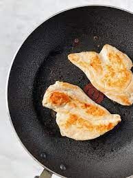

Pan Seared Chicken Cutlets

Description
Second on my list of easy meals for the working adult, pan seared chicken is not only quick, but tasty!
Ingredients
- One Chicken Cutlet
- Seasoning Salt
- Olive Oil
Steps
- Turn Stove on High, place skillet on stove.
- Add Olive Oil to skillet.
- Lay Chicken Cutlets on pan, careful to avoid hot oil.
- Sear each side, flipping as needed, adding seasoning salt to both sides in pinches.
- Keep searing both sides of chicken until golden-brown crust starts to form.
- Once golden-brown crust forms, turn off stove and use tongs to place chicken onto plate. Let cool and enjoy.